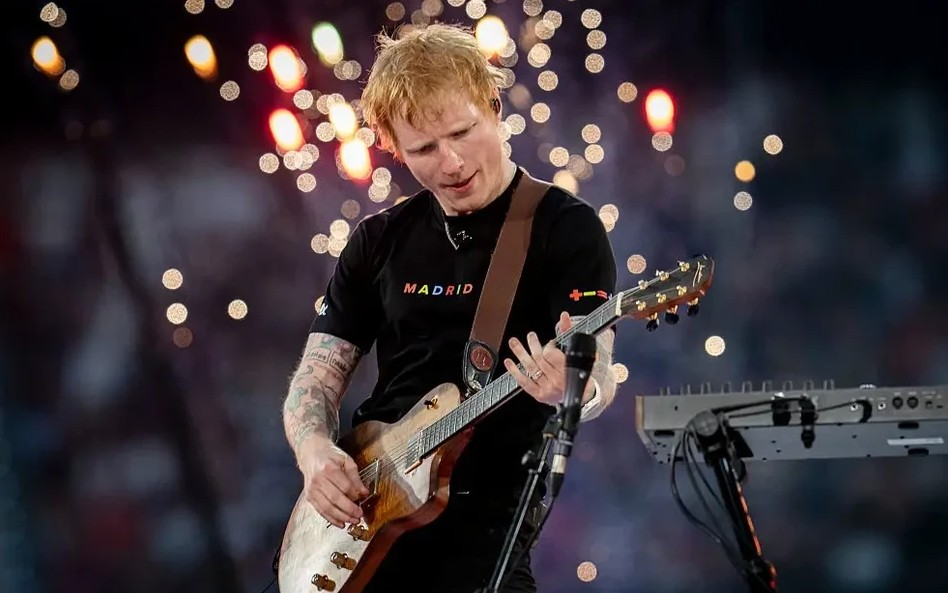
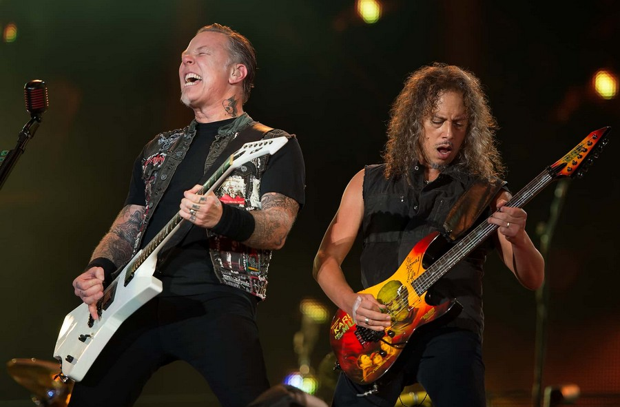
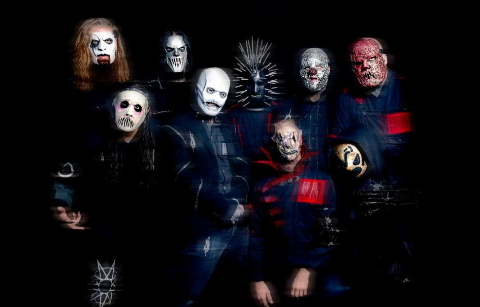
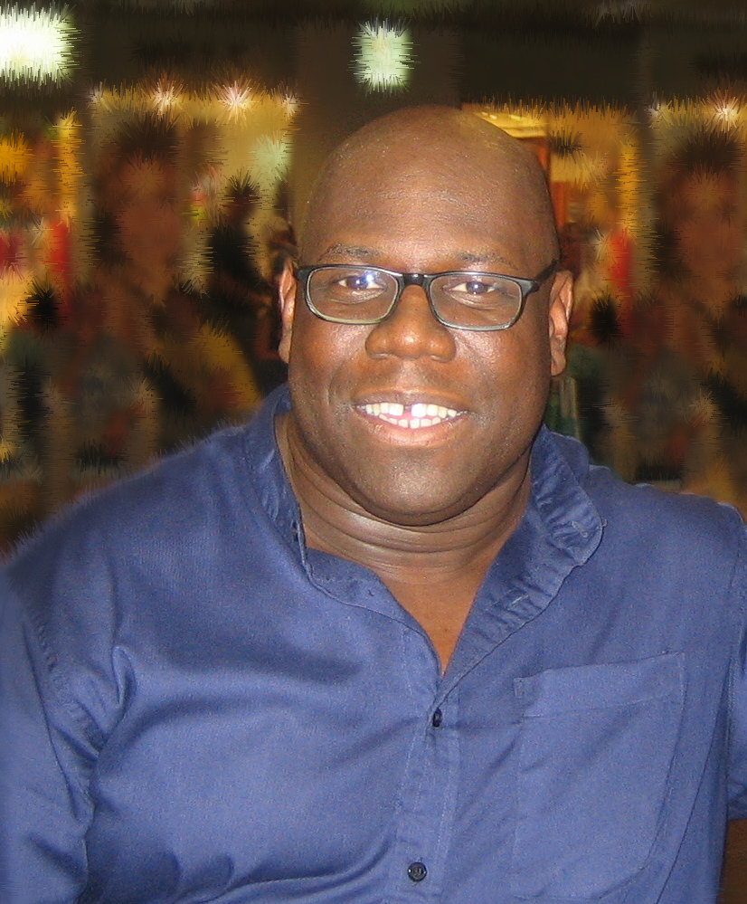

Ed Sheeran

Ed Sheeran ist ein britischer Sänger und Songwriter.
Metallica

Metallica ist eine der bekanntesten Metal-Bands der Welt.
Slipknot

Slipknot ist eine Metal‑Band, die für ihre Masken,
ihre Power und ihre extrem intensiven Live‑Shows bekannt ist.
Wer sie einmal gehört hat, weiß: Das ist nichts für schwache Nerven
– aber absolut legendär.
Carl Cox

Carl Cox ist ein britischer Techno und House-DJ und -Musiker.
1997 wurde er vom britischen Magazin DJ Mag als bester
DJ der Welt ausgezeichnet.